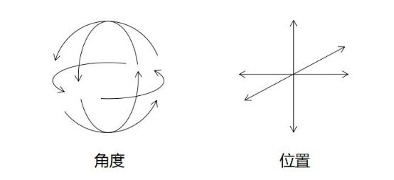
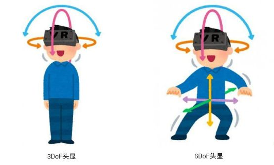
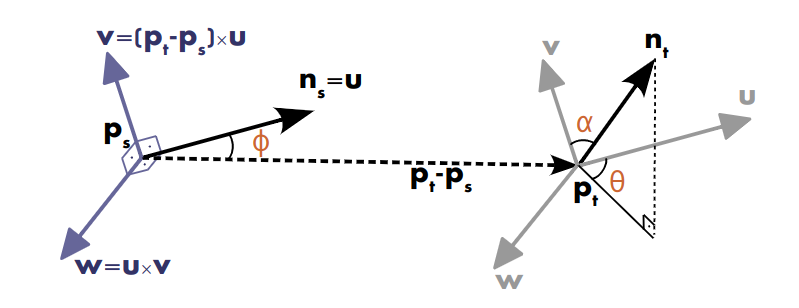
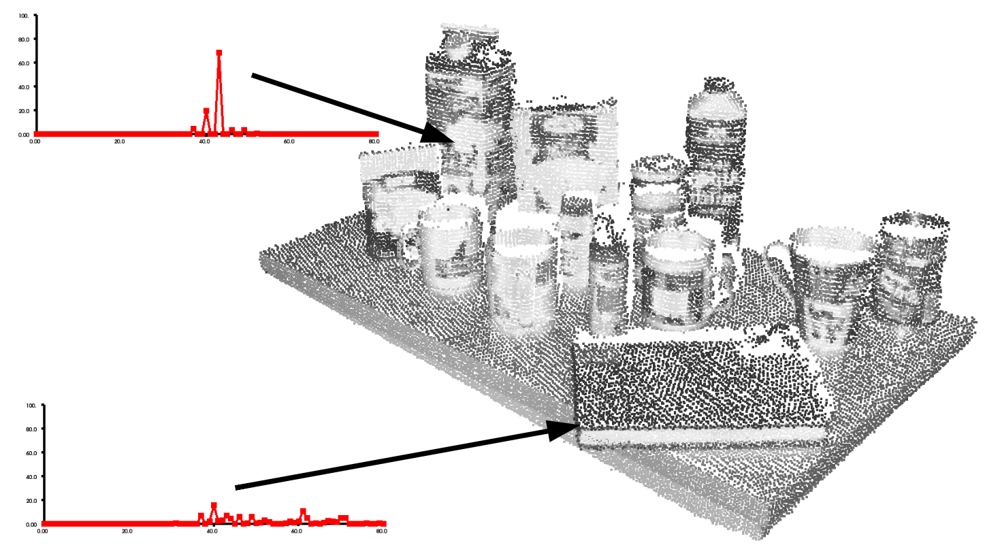
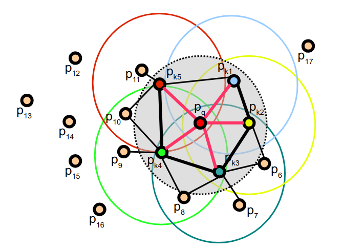
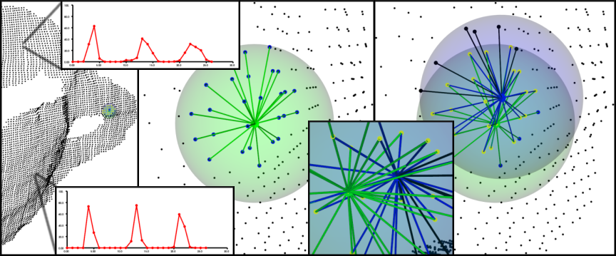

3D特征描述子¶
特征描述子 Feature Descriptor
- 是每个特征点独特的身份认证
- 同一空间点在不同视角的特征点具有高度相似的描述子
- 不同特征点的描述子差异性尽量大
- 通常描述子是一个具有固定长度的向量
描述子可以分为以下几种类型：基于不变性的描述子、基于直方图的描述子、二进制描述子
PCL主要实现了：
NARF特征点描述子、PFH（FPFH）点特征直方图描述子、RoPs 特征、VFH视点特征直方图描述子、GASD全局对齐的空间分布描述子、基于惯性矩和偏心率的描述子
PFH点特征直方图描述子¶
表面法线和曲率估计是某个点周围的几何特征的基本表示方法。虽然计算起来比较容易，但是能够提供的信息并不多。因为他们只是用很少的几个参数值近似地表示一个点的k邻域几何特征。大部分场景下都会有很多相同或相似的特征值，故而只采用点特征就会少了很多全局的特征信息。
我们可以通过点特征直方图（Point Feature Histograms， PFH）来采集全局的特征信息。
理论基础
PFH通过参数化查询点与邻域点之间的空间差异信息，形成一个多维直方图对点的k邻域的几何特征进行描述。直方图所在的高维超空间为特征的表示提供了一个可度量的信息空间，使点云对应的6DOF（degree of freedom自由度）姿态来说具有不变性，并且在不同的采样密度或邻域噪音等级下具有鲁棒性。

在VR的应用中也分为3DoF和6DoF：

PFH表示法是基于点与其k邻域之间的关系以及他们所构成的法线而建立的。他考虑了法线之间的关系，并较好的获取了样品表面的变化情况，进而描述了样本的几何特征。下图表示的是查询点P_q的PFH计算影响区域。
P_q为中间的红色点，虚线圆内是半径为r的所有邻域点。他们相互连接在一个网络中。PFH描述子是通过计算邻域内所有两点之间的关系而得到的直方图。

为了计算两个点P_s和P_t以及他们对应法线\vec n_s和\vec n_t之间的关系，我们在其中一个点上定义一个固定的局部坐标系（本例为P_s点）。

坐标系uvw的定义算法：
使用上图中的uvw坐标系，我们可以用一组角度来表示法线\vec n_s和\vec n_t之间的关系（偏差）：
这里d表示P_{t},P_{s}之间的欧氏距离，即 d={\left\|P_{t}-P_{s}\right\|_{2}} ，通过计算k邻域内的每一对点的 <\alpha, \phi, \theta,d> 四个值，就可以把之前两个点和其法向量相关的12个参数（两个点的xyz坐标和法向量）减少到4个。为每个点估算PFH四元组，可以使用以下代码：
#include <pcl/features/pfh_tools.h>
/** \brief 计算点对的PFH特征的4个特征元素值，包含3个角度值和一个两点间的距离值
* \param[in] p1 the first XYZ point 第一个点的xyz坐标
* \param[in] n1 the first surface normal 第一个点所在区域的表面法向量
* \param[in] p2 the second XYZ point 第二个点的xyz坐标
* \param[in] n2 the second surface normal 第二个点所在区域的表面法向量
* \param[out] f1 第一个角度特征值 Θ (angle between the projection of nq_idx and u)
* \param[out] f2 第二个角度特征值 α (angle between nq_idx and v)
* \param[out] f3 第三个角度特征值 Φ (angle between np_idx and |p_idx - q_idx|)
* \param[out] f4 两点间的欧式距离 d (p_idx - q_idx)
*/
computePairFeatures (const Eigen::Vector4f &p1, const Eigen::Vector4f &n1,
const Eigen::Vector4f &p2, const Eigen::Vector4f &n2,
float &f1, float &f2, float &f3, float &f4);
直方图的统计方式：
- 将<\alpha, \phi, \theta,d>中的每个特征值范围划分为b个子区间（默认为5，这个数值可以自行计算并设置），则4个特征共有b^4个区间。
- 统计对应特征值落在每个子区间的点的数目，由于<\alpha, \phi, \theta>三个特征都是法线之间的角度信息，则它们的值很可能会归为同一个空间。
- 计算每一个点对的特征值，直方图中对应于该点对四个特征值区间的统计个数+1
注意，在一些情况下，第四个特征d通常跟设备捕获2.5D深度数据是相关的，临近点的距离d是从视点开始递增的，在不同视角下，这些值的变化意义不大，所以在扫描局部点密度影响特征时，省略距离d效果会更好。
以下是两个点的PFH直方图演示：

默认PFH的实现，对每个特征都使用5个子区间进行分类，这里不包括距离d。这样就组成了一个125个浮点数元素的特征向量（5^3），保存在数据类型pcl::PFHSignature125中。
以下是根据3D点与法线的空间邻域估计单个点的三个角特征的PFH（点特征直方图）。
/** \brief Estimate the PFH (Point Feature Histograms) individual signatures of the three angular (f1, f2, f3)
* features for a given point based on its spatial neighborhood of 3D points with normals
* \param[in] cloud the dataset containing the XYZ Cartesian coordinates of the two points
* \param[in] normals the dataset containing the surface normals at each point in \a cloud
* \param[in] indices the k-neighborhood point indices in the dataset
* \param[in] nr_split the number of subdivisions for each angular feature interval
* \param[out] pfh_histogram the resultant (combinatorial) PFH histogram representing the feature at the query point
*/
void
computePointPFHSignature (const pcl::PointCloud<PointInT> &cloud,
const pcl::PointCloud<PointNT> &normals,
const std::vector<int> &indices, int nr_split,
Eigen::VectorXf &pfh_histogram);
参数说明：
-
cloud：包含xyz坐标点信息的数据集
-
normals：数据集中点的法向量信息
-
indices：指定查询点，数据集中k邻域点的索引
-
nr_split：每个角特征的区间数
-
pfh_histogram（输出）：结果PFH直方图，表示查询点处的特征
更多相关信息和数学推导，包括不同几何体表面点云的 PFH 特征分析，详见论文链接RusuDissertation
代码实现参见：https://pcl-tutorials.readthedocs.io/en/master/pfh_estimation.html#
pfh_estimation.cpp
//
// Created by ty on 20-5-28.
//
#include <pcl/point_types.h>
#include <pcl/features/pfh.h>
#include <pcl/io/io.h>
#include <pcl/io/pcd_io.h>
#include <pcl/visualization/cloud_viewer.h>
#include <pcl/features/normal_3d.h>
int
main() {
// load point cloud
pcl::PointCloud<pcl::PointXYZ>::Ptr cloud(new pcl::PointCloud<pcl::PointXYZ>);
// pcl::io::loadPCDFile("./data/target.pcd", *cloud);
pcl::io::loadPCDFile("./data/bunny.pcd", *cloud);
// estimate normals ------------------------------------------------------------- 计算法向量
pcl::PointCloud<pcl::Normal>::Ptr normals(new pcl::PointCloud<pcl::Normal>);
// Object for normal estimation.
pcl::NormalEstimation<pcl::PointXYZ, pcl::Normal> normalEstimation;
//normalEstimation.setIndices()
normalEstimation.setInputCloud(cloud);
// For every point, use all neighbors in a radius of 3cm.
normalEstimation.setRadiusSearch(0.03);
// A kd-tree is a data structure that makes searches efficient. More about it later.
// The normal estimation object will use it to find nearest neighbors.
pcl::search::KdTree<pcl::PointXYZ>::Ptr kdtree(new pcl::search::KdTree<pcl::PointXYZ>);
normalEstimation.setSearchMethod(kdtree);
// Calculate the normals.
normalEstimation.compute(*normals);
// Create the PFH estimation class, and pass the input dataset+normals to it ------计算PFH直方图
pcl::PFHEstimation<pcl::PointXYZ, pcl::Normal, pcl::PFHSignature125> pfh;
pfh.setInputCloud(cloud);
pfh.setInputNormals(normals);
// alternatively, if cloud is of tpe PointNormal, do pfh.setInputNormals (cloud);
// Create an empty kdtree representation, and pass it to the PFH estimation object.
// Its content will be filled inside the object, based on the given input dataset (as no other search surface is given).
pcl::search::KdTree<pcl::PointXYZ>::Ptr tree(new pcl::search::KdTree<pcl::PointXYZ>());
//pcl::KdTreeFLANN<pcl::PointXYZ>::Ptr tree (new pcl::KdTreeFLANN<pcl::PointXYZ> ()); -- older call for PCL 1.5-
pfh.setSearchMethod(tree);
// Output datasets
pcl::PointCloud<pcl::PFHSignature125>::Ptr pfhs(new pcl::PointCloud<pcl::PFHSignature125>());
// Use all neighbors in a sphere of radius 5cm
// 使用一个半径为5厘米的球体，作为搜索邻域
// IMPORTANT: the radius used here has to be larger than the radius used to estimate the surface normals!!!
// 重点： 半径必须要比用于估算法向量的邻域半径要大
pfh.setRadiusSearch(0.08);
// Compute the features
pfh.compute(*pfhs);
unsigned long size = pfhs->points.size();
for (int j = 0; j < size; ++j) {
pcl::PFHSignature125 &signature125 = pfhs->points[j];
float* h = signature125.histogram;
printf("%d: %f,%f,%f \n", j, h[1], h[2], h[3]);
}
// visualize normals
pcl::visualization::PCLVisualizer viewer("PCL Viewer");
viewer.setBackgroundColor(0.0, 0.0, 0.5);
viewer.addPointCloudNormals<pcl::PointXYZ, pcl::Normal>(cloud, normals, 1, 0.01, "normals");
while (!viewer.wasStopped()) {
viewer.spinOnce();
}
return 0;
}
FPFH快速点特征直方图描述子¶
如果点云P中有n个点，则其点特征直方图PFH的理论计算复杂度O(nk^2)，其中k是点云P中每个点p计算特征向量时，要考虑的邻域数量。对于实时应用或近实时应用，密集点云的点特征直方图PFH的计算，是一个主要的性能瓶颈，故而我们可以将之进行简化，称为快速点特征直方图FPFH（Fast Point Feature Histograms）。这个FPFH将计算复杂度降到了O(nk)，但是仍然保留了PFH大部分的识别特性。
FPFH计算过程
- 为查询点求得它和其k邻域内每个点之间的三个特征元素值，然后统计成一个SimplePFH；
- 分别对k邻域中的每个点确定k邻域，按第一步分别形成自己的SPFH；
- 对邻域中的各个SPFH进行加权统计，得到最终的FPFH公式如下：
权重\omega_{k}表示查询点 P_q 和其临近点 P_k 之间的距离。

FPFH快点特征直方图的影响区域图。 每个查询点（红色）仅连接到其直接的k邻居（由灰色圆圈包围）。 每个直接邻居都连接到其自己的邻居，并将所得直方图与查询点的直方图一起加权以形成FPFH。 较粗的连接两次会被重复计数2次（比较重要的点对）。
FPFH与PFH的主要区别
-
FPFH没有对全互连点的所有邻近点的计算参数进行统计，因此可能漏掉了一些重要的点对，而这些漏掉的对点可能对捕获查询点周围的几何特征有贡献；
-
PFH特征模型是对查询点周围的一个精确的邻域半径内，而FPFH还包括半径r范围以外的额外点对（但不超过2r的范围）；
- 因为采用权重计算的方式，所以FPFH结合SPFH值，重新捕获邻近重要点对的几何信息；
- 由于FPFH大大地降低了PFH的整体复杂性，因此FPFH经常使用在实时应用中；
- 通过分解三元组，简化了合成的直方图。也就是简单生成d分离特征直方图，对每个特征维度来单独绘制，并把它们连接在一起。

默认pcl实现的的FPFH使用11个统计区间（对每个特征值都将其参数区间分割为11个），分别计算特征直方图，然后合并得到了一个33个元素的特征向量，保存在数据类型pcl::FPFHSignature33中。
代码实现参见：https://pcl-tutorials.readthedocs.io/en/master/fpfh_estimation.html#fpfh-estimation
利用OpenMP提高FPFH的计算速度
对于计算速度要求苛刻的用户，PCL提供了一个FPFH估计的另一实现，它使用多核/多线程规范，利用OpenMP开发模式来提高计算速度。这个类的名称是pcl::FPFHEstimationOMP，并且它的应用程序接口（API）100%兼容单线程pcl::FPFHEstimation，这使它适合作为一个替换元件。在8核系统中，OpenMP的实现可以在6-8倍更快的计算时间内完全同样单核系统上的计算。
VFH视点特征直方图描述子¶
源于FPFH描述子，为了使构造的特征保持缩放不变性的同时，还要区分不同的位姿，因而计算时，需要加入视点信息。VFH时点特征直方图包含两个部分：
- 视点方向的相关分量
- 包含扩展FPFH的描述表面形状的分量
NARF特征点描述子¶
NARF （Normal Aligned Radial Feature）法线对齐径向特征，是一种3D特征检测和描述的算法。参见：
《Point Feature Extraction on 3D Range ScansTaking into Account Object Boundaries》